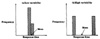
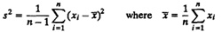
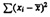

){kind=link}
){kind=link}
 are independent. Given n - 1 differences, the nth difference can be computed since the sum of all n differences must be zero. The number of independent terms in a sum is also called its degrees of freedom.
are independent. Given n - 1 differences, the nth difference can be computed since the sum of all n differences must be zero. The number of independent terms in a sum is also called its degrees of freedom.| Previous | Table of Contents | Next |
| TABLE 12.4 Program Optimizer Static Size Data | |||
|---|---|---|---|
| Code Size | |||
| Program | Before | After | Ratio |
|---|---|---|---|
| BubbleP | 119 | 89 | 0.75 |
| Intmmp | 158 | 134 | 0.85 |
| PermP | 142 | 121 | 0.85 |
| PuzzleP | 8612 | 7579 | 0.88 |
| QueenP | 7133 | 7062 | 0.99 |
| QuickP | 184 | 112 | 0.61 |
| SieveP | 2908 | 2879 | 0.99 |
| TowersP | 433 | 307 | 0.71 |
| Geometric mean | 0.82 | ||
In this case, the total sum of code sizes does make physical sense, and therefore, one would be tempted to argue that a ratio of sums should be used to estimate the average ratio. However, there are two problems with that argument. First, the workload sizes selected for this study are widely different. They cover a range of approximately two orders of magnitude. Thus, adding 119 (size of BubbleP) to 8612 (size of PuzzleP) could be justified only if it could be argued that the frequency of execution of these two workloads in a real user environment is equal; otherwise, the sizes should be weighted by their respective frequencies of usage. Since the frequency of usage is not known, the weights cannot be selected. Second, the sizes before and after the optimization are expected to follow the following multiplicative model:
ai = cbi
where bi and ai are the sizes before and after the program optimization and c is the effect of the optimization that is expected to be independent of the code size. As discussed later in Section 21.7 on multiplicative models for two-factor experiments, the best estimate of the effect c in this case is obtained by taking a log of the model:
log ai = log c + log bi
or
logc = logbi - log ai
and estimating log c as the arithmetic mean of logbi - log ai. This is equivalent to estimating c as the geometric mean of bi/ai. This geometric mean is 0.82 as shown in the Table 12.4. Notice that the assumption of the data following the multiplicative model is justified by the fact that the ratios bi/ai are all in the small range of 0.61 and 0.99.
Then there is the man who drowned crossing a stream with an average depth of six inches.
— W. I. E. Gates
Given a data set, summarizing it by a single number is rarely enough. It is important to include a statement about its variability in any summary of the data. This is because given two systems with the same mean performance, one would generally prefer one whose performance does not vary much from the mean. For example, Figure 12.3 shows histograms of the response times of two systems. Both have the same mean response time of 2 seconds. In case (a), the response time is always close to its mean value, while in case (b), the response time can be 1 millisecond sometimes and 1 minute at other times. Which system would you prefer? Most people would prefer the system with low variability.

FIGURE 12.3 Histograms of response times of two systems.
Variability is specified using one of the following measures, which are called indices of dispersion:
The range of a stream of values can be easily calculated by keeping track of the minimum and the maximum. The variability is measured by the difference between the maximum and the minimum. The larger the difference, the higher the variability. In most cases, the range is not very useful. The minimum often comes out to be zero and the maximum comes out to be an “outlier” far from typical values. Unless there is a reason for the variable to be bounded between two values, the maximum goes on increasing with the number of observations, the minimum goes on decreasing with the number of observations, and there is no “stable” point that gives a good indication of the actual range. The conclusion is that the range is useful if and only if there is a reason to believe that the variable is bounded. The range gives the best estimate of these bounds.
The variance of a sample of n observations {x1, x2, . . ., xn} is calculated as follows:

The quantity s2 is called the sample variance and its square root s is called the sample standard deviation. The word sample can be dropped if there is no ambiguity and it it is clear from the context that the quantities refer to just one sample. Notice that in computing the variance, the sum of squares  is divided by n - 1 and not n. This is because only n - 1 of the n differences are independent. Given n - 1 differences, the nth difference can be computed since the sum of all n differences must be zero. The number of independent terms in a sum is also called its degrees of freedom.
| Previous | Table of Contents | Next |